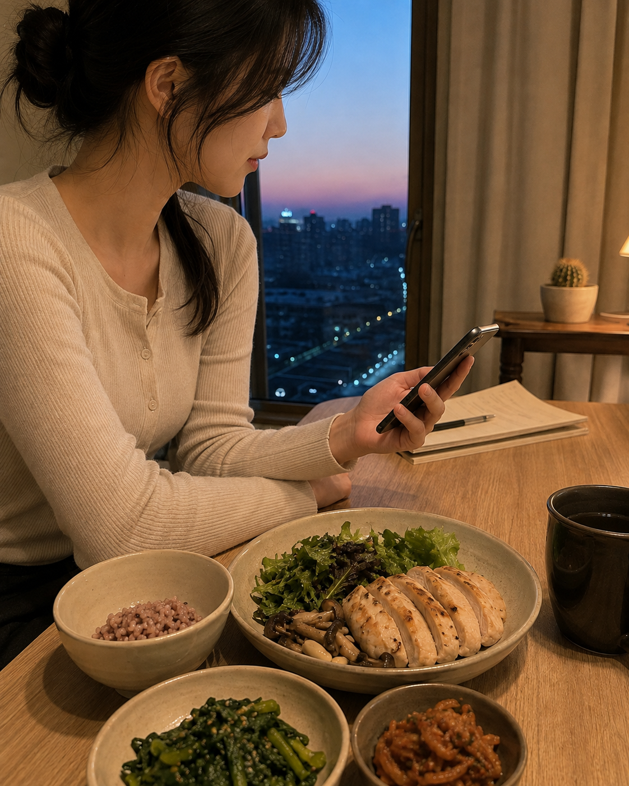
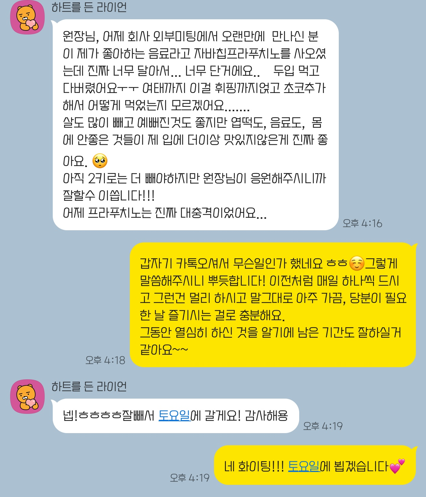

다이어트를 시작하면 식사량부터 크게 줄여야 한다고 생각하는 분이 많습니다. 견뎌내는 배고픔이 커질수록 내가 제대로 하고 있구나 하고 여기기도 합니다. 체중을 줄이려면 몸이 사용하는 에너지보다 섭취하는 에너지가 적은 상태가 필요한 것은 동의합니다. 그렇다고 매 끼니를 아주 적게 먹거나 심한 허기를 견뎌야 하는 것은 절대 아닙니다.
같은 열량을 먹어도 음식의 구성에 따라 식후 포만감은 완전히 달라지며 단백질과 식이섬유를 갖춘 식사는 배부름을 오래 유지할 수 있습니다. 다이어트 한약을 처방하는 다이어트 전문 한의사지만, 절대로 ‘굶는 것’을 설명드리지 않는 이유입니다.
쿠키 먹고 저녁 굶기
간식의 열량을 끼니로 대신하면 하루에 필요한 영양소를 고르게 섭취하기 어렵습니다.
“오후에 초콜릿 쿠키를 먹어서 저녁은 안 먹었어요.”
다이어트 상담에서 자주 접하는 이야기입니다. 쿠키로 섭취한 열량만큼 저녁을 빼면 된다고 생각하기 쉽지만, 쿠키와 제대로 구성한 한 끼는 몸에 같은 영양을 제공하지 않습니다.
초콜릿 쿠키는 대체로 설탕과 지방의 비중이 높습니다. 한 끼에 필요한 단백질, 식이섬유, 비타민과 무기질은 충분하지 않구요.
쿠키로 대신한 저녁은 밤늦게 허기를 느끼게 하기도 하고, 다음날 평소보다 더 많은 음식을 찾게 합니다. 특히 단백질 섭취가 부족한 상태가 이어지면 근육량이 함께 줄어 체중은 감소해도 체지방률이 오르는 역설적인 결과가 나타날 수 있습니다.
쿠키를 먹은 뒤 저녁 거르기
- 단백질과 식이섬유 부족
- 밤늦은 허기 가능성
- 죄책감과 보상 행동 반복
저녁의 구성을 가볍게 조절하기
- 생선·달걀·두부 등 단백질 섭취
- 채소와 버섯을 넉넉히 곁들이기
- 밥이나 면의 양을 상황에 맞게 조절
포만감 높이는 식사
양을 줄이는 데만 집중하기보다 배고픔이 늦게 찾아오는 한 끼를 만들어야 합니다.
채소는 비교적 낮은 열량으로 식사의 부피를 늘리는 데 도움이 됩니다. 여기에 달걀, 생선, 두부, 콩, 살코기와 같은 단백질 식품을 더하면 한 끼의 영양 구성을 갖추기 좋습니다.
달걀, 생선, 닭고기, 살코기, 두부, 콩
잎채소, 버섯, 해조류, 콩류, 통곡물
현미밥, 잡곡밥, 감자, 고구마, 통곡물 빵
견과류, 생선, 들기름과 물·무가당 차
탄수화물을 모두 제외할 필요는 없습니다. 개인에게 알맞은 소량의 탄수화물을 포함하고 단백질을 충분히 섭취하며 근력 운동을 병행하는 방식은 근육 손실을 줄이고 체지방 감량을 목표로 식사를 구성하는 데 도움이 됩니다. 개인의 활동량과 건강 상태에 맞는 양을 섭취하는 것이 좋고, 저희 환자분들의 경우 기본적인 식사부터 간식까지 얼마나 그리고 어떻게 드시는 게 좋을지 확인하며 다이어트를 도와드리고 있습니다.
견과류는 영양적인 측면에서는 도움이 되며 배가 많이 고플 때 간식으로 드시기도 하지만, 너무 많은 양이 되지 않도록 주의해야 합니다.
실제 다이어트 식사
잡곡밥과 닭가슴살, 채소와 버섯을 한 끼 안에 담은 저녁 식사 예시입니다.

밥의 양만 크게 줄이기보다 밥과 함께 단백질 반찬, 채소 반찬을 갖춰 먹는 편이 포만감을 유지하기 좋습니다. 과자나 빵만으로 한 끼를 대신하면 먹은 열량에 비해 허기가 빨리 찾아올 수 있으니까요.
한 끼를 구성할 때는 접시의 절반을 채소와 과일, 나머지 절반을 단백질 식품과 통곡물 또는 전분성 탄수화물로 나누어 생각하면 편합니다. 채소의 수분과 식이섬유는 식사의 부피를 확보하고, 단백질 식품은 감량 중 제지방을 유지하는 식사 구성에 필요합니다. 현미밥이나 잡곡밥 같은 탄수화물도 완전히 빼기보다 활동량과 목표에 맞춘 양을 포함하는 편이 식사를 오래 이어가기 좋습니다.
한눈에 보는 한 끼 접시 비율
- 50%채소와 과일을 다양하게 구성합니다.
- 25%생선, 닭고기, 달걀, 두부, 콩 등 단백질 식품을 담습니다.
- 25%잡곡밥, 현미밥, 감자, 고구마 등 탄수화물을 알맞게 담습니다.
이 비율은 열량을 정확히 50:25:25로 계산하라는 뜻이 아니라 접시에 담는 음식군의 상대적인 구성을 보여주는 기준입니다. 실제 밥과 단백질의 양은 체중, 근육량, 운동량, 질환과 하루 전체 섭취량을 함께 고려해 조정해야 합니다.
3개월 후 달라진 입맛
늘 마시던 자바칩 프라푸치노를 두 입 만에 내려놓게 된 실제 식사 경험입니다.
자바칩 프라푸치노가 너무 달게 느껴진 날
3개월 동안 식습관과 생활을 조절한 성인 사례

3개월이 지난 뒤 환자분은 늘 좋아하던 자바칩 프라푸치노를 오랜만에 마셨다가 너무 달아 두 입 만에 내려놓았다고 말씀하셨습니다. 당류가 많은 음료와 강한 단맛을 접하는 횟수를 줄이는 선택이 이어지면서 이전에 익숙했던 맛을 다르게 받아들이게 된 경험입니다.
3개월은 포만감이나 식욕만 조절하는 기간이 아닙니다. 반복되는 식사 선택과 생활 패턴을 새롭게 익히고, 자신이 자주 먹는 음식과 상황을 살피며 오래 유지할 습관을 만들어 가는 중요한 시간입니다. 입맛과 습관이 달라지는 속도는 개인차가 있지만, 대부분 3개월이 지난 시점에서 이러한 변화를 체감하시곤 합니다.
세계보건기구(WHO)가 말하는 유리당에는 식품 제조나 조리 과정에서 더한 당뿐 아니라 꿀, 시럽, 과일주스와 농축 과일주스에 자연적으로 들어 있는 당도 포함됩니다. WHO는 성인과 어린이 모두 유리당 섭취를 하루 총열량의 10% 미만으로 낮추고, 건강상 이점을 위해 5% 미만까지 줄일 것을 제안합니다. 당류가 든 음료는 씹는 과정 없이 짧은 시간에 마시게 되고 같은 열량의 고형식보다 포만감이 낮을 수 있어 하루 총열량을 높이기 쉽습니다.
하루 총열량에서 유리당이 차지하는 비율
하루 2,000 kcal를 섭취하는 성인이라면 10%는 약 50g, 5%는 약 25g에 해당합니다. 이 수치는 음료 한 잔이 아니라 하루 동안 음식과 음료로 섭취한 유리당의 합계입니다.
음료 한 잔보다 하루 전체의 반복을 봐야 합니다
유리당 50g은 설탕 약 12작은술, 25g은 약 6작은술에 해당합니다. 달콤한 음료에는 기본 음료의 당류뿐 아니라 시럽, 소스, 휘핑크림과 토핑이 더해질 수 있으므로 제품의 영양정보와 주문 구성을 함께 살펴야 합니다. 한 번 마신 음료를 문제로 보기보다 어떤 크기의 음료를 일주일에 몇 번 마시는지 확인하는 것이 실제 섭취량을 줄이는 데 더 유용합니다.
늘 마시던 용량보다 작은 크기를 선택해 한 번에 섭취하는 당과 열량을 낮춥니다.
시럽과 소스 횟수, 휘핑크림과 토핑을 줄여 추가되는 당류를 조절합니다.
매일 마신다면 먼저 일주일에 마시는 횟수를 정하고 물이나 무가당 차를 함께 활용합니다.
다이어트 방법 점검
체중이 줄더라도 일상과 건강이 흔들린다면 식사 계획을 다시 확인해야 합니다.
- 하루 종일 심한 허기를 견디고 있습니다.
- 간식을 먹을 때마다 다음 끼니를 거릅니다.
- 저녁이나 주말에 과식하는 일이 잦습니다.
- 어지럼증, 무기력감 또는 집중력 저하가 생깁니다.
- 음식에 대한 죄책감이나 불안이 커집니다.
- 수면이나 월경 주기에 변화가 생깁니다.
이러한 변화가 이어진다면 올바른 다이어트가 아니라는 뜻입니다. 실제로 어떻게 식단을 구성하는 것이 좋고 또 어느 정도의 양이 필요한지는 개인의 체중과 근육량, 활동량, 질환, 생활습관에 따라 다르기에 개인별 접근이 필요합니다. 따라서 유튜브나 SNS에서 유행하는 다이어트 방식이 나에게 최고의 방식은 아니라는 점을 기억해 주시길 바랍니다.
다이어트 자주 묻는 질문
식사와 간식에 관한 궁금증을 짧고 명확하게 알려드립니다.
다이어트 중 쿠키를 먹으면 저녁을 굶어야 하나요?
다이어트 중 배가 고픈 것은 정상인가요?
다이어트 중에도 배부르게 먹을 수 있나요?
단 음료를 줄이면 입맛이 달라질 수 있나요?
다이어트 중 간식을 먹어도 되나요?
참고한 건강 정보
- CDC — Steps for Losing Weight
- NIDDK — Health Tips for Adults
- WHO — Guideline: Sugars intake for adults and children
- Harvard T.H. Chan School of Public Health — Healthy Eating Plate
이 글은 일반적인 건강 정보를 제공하기 위한 자료이며 개인의 진단이나 치료를 대신하지 않습니다. 당뇨병, 신장질환, 섭식장애를 비롯한 질환이 있거나 약물을 복용하고 있다면 전문가와 상담한 뒤 체중 감량 계획을 세우세요.
디어한의원
서울 서초구 사임당로 143 3층 309호, 310호02-3486-1777